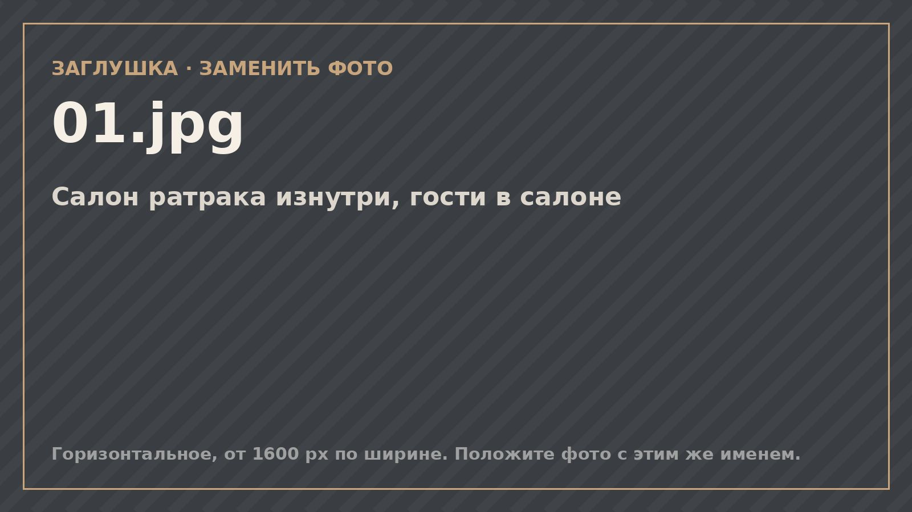
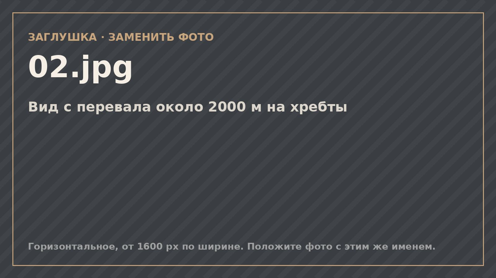
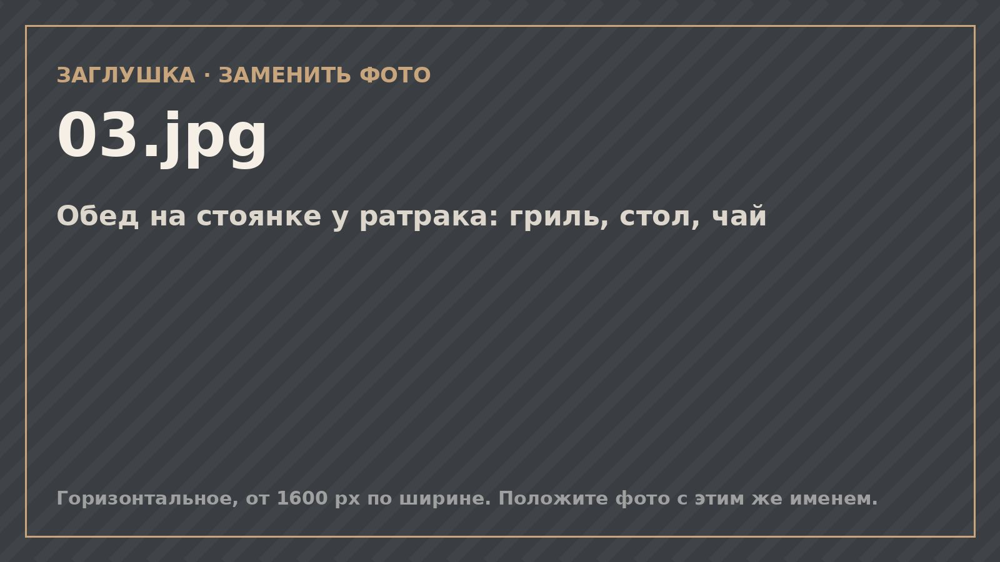

Зимой ратраки прокладывают дорогу прямо по горам. На нём можно подняться на перевалы и хребты, куда летом идут пешком и гораздо дольше. Это прогулка, а не катание: лыжи, сноуборд и подготовка не нужны.
Что такое ратрак и зачем на нём ехать
Ратрак — гусеничная машина, которая ходит по глубокому снегу. Обычно на них готовят горнолыжные склоны. Наш ратрак везёт гостей: в салоне с климат-контролем вся группа едет вместе, тепло и без ветра.
Ратрак — редкая техника, поэтому сама поездка на нём по горам — уже впечатление.

Маршрут
Из Риддера едем на наших внедорожниках около 45 минут до базы, где стоит техника. Точку старта выбираем по погоде и сообщаем при подтверждении выезда.
Подъём — 10–15 км по горам до перевала около 2000 метров, на ратраке это около часа. По пути — остановки на обзорных площадках, виды на хребты и время на фото.

Наверху — стоянка: столы, гриль, обед и горячий чай. Можно погулять по снегу и поснимать. Спускаемся тем же путём до базы, затем трансфер в Риддер. Весь выезд занимает 5–6 часов.
Кому подойдёт
- Тем, кто хочет увидеть зимние горы, но не катается на лыжах.
- Семьям и компаниям: все едут в одном салоне.
- Корпоративам: ратрак можно взять целиком под компанию до 12 человек, в том числе в будни.
- Гостям баз отдыха, которые ищут занятие на полдня.
Если хочется быстрее и динамичнее, посмотрите туры на снегоходах. Если вы катаетесь — для этого есть фрирайд с заброской ратраком.
Сколько стоит
Стоимость выезда — техника, водители, гид — почти одинаковая, едет 4 человека или 12. Она делится на участников, поэтому чем больше группа, тем дешевле каждому.
- От 60 000 ₸ за человека — в группе 10–12 человек.
- Ратрак целиком для своей компании — по запросу.
Если вас меньше, назовём точную цену под ваш состав или предложим присоединиться к сборной группе по выходным.
В стоимость входят техника и топливо, гид, трансфер из Риддера до старта и обратно, обед наверху и горячий чай, экипировка без доплаты. Трансфер из Усть-Каменогорска или с базы отдыха — по запросу.

Как одеться
В салоне тепло, но наверху вы будете гулять по снегу. Нужны тёплые ботинки, непродуваемые куртка и штаны, шапка, перчатки и солнцезащитные очки: на высоте снег слепит.
Частые вопросы
Нужно ли уметь кататься на лыжах?
Нет. Выезд на ратраке — прогулочный: подъём в горы, обзорные площадки и обед наверху.
Сколько человек помещается в ратрак?
До 12 гостей. Вся группа едет вместе в салоне с климат-контролем.
Можно ли взять ратрак только для своей компании?
Да, ратрак целиком под компанию до 12 человек — по запросу, в том числе в будни.
Когда начинается сезон?
С 10 декабря, как только в горах ляжет снег. Сборные выезды — по выходным, отдельные — на любую свободную дату. Новогодние даты разбирают первыми.